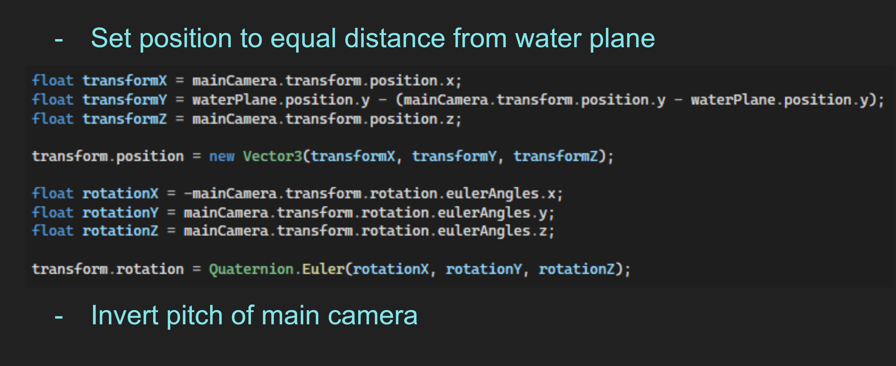
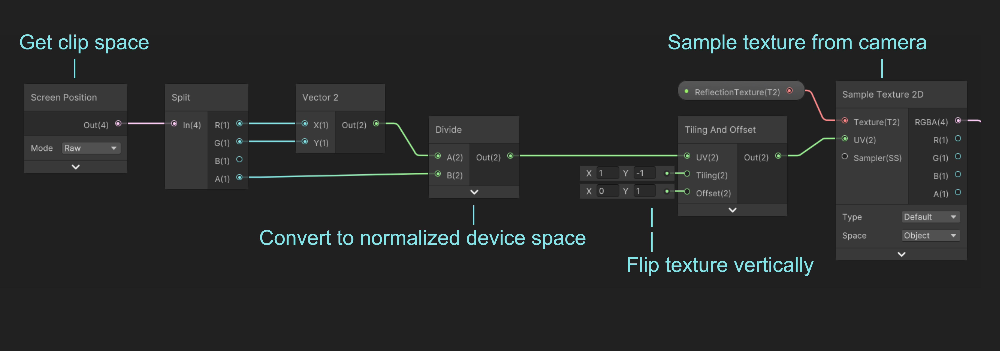
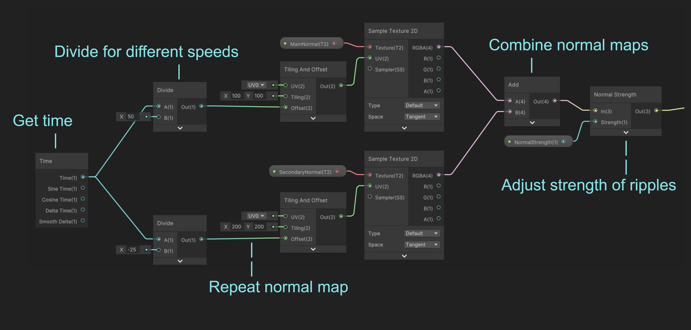
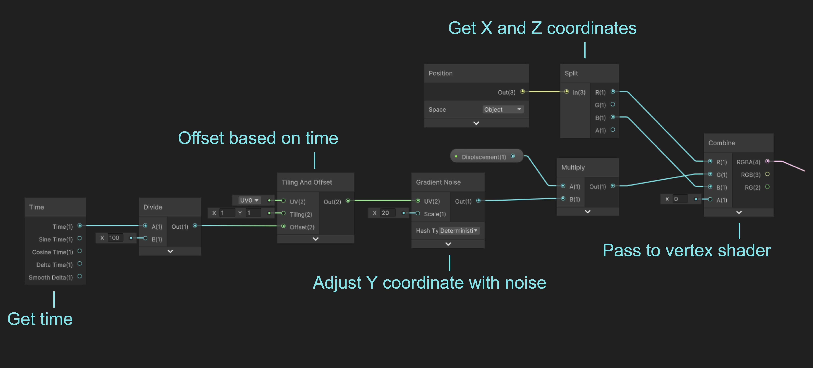

Suzume Portals

- Role - Graphics Programmer
- Time Frame - 1 Week
- Team Size - 2
- Tools - Unity
The goal of this project was to use a number of smaller graphical effects to create a complete and cohesive scene, inspired by the Shinkai film "Suzume" which features a door that transports the main character to a vast landscape. We wanted to represent this effect using portals, grass, and a reflective water shader.

Water Shader
The first step in creating the water shader is to make a second camera below the water plane to mirror the player's movements. This camera captures what the player can see reflected in the water, and will later be rendered onto a texture on the water itself.
In the water shader, we can sample from the camera and transform the resulting texture so that the reflection appears at the right angle and scale.
For an added layer of realism, we can sample from alternating sine waves to create ripples in the water that will be overlaid atop the reflection texture.
Using these inputs, we can adjust the plane's normal map to warp the reflection texture.
To really sell the effect, we'll also slightly change the y-position of each point according to the normal map so that the ripples actually cause the water to move up and down slightly with each ripple.
